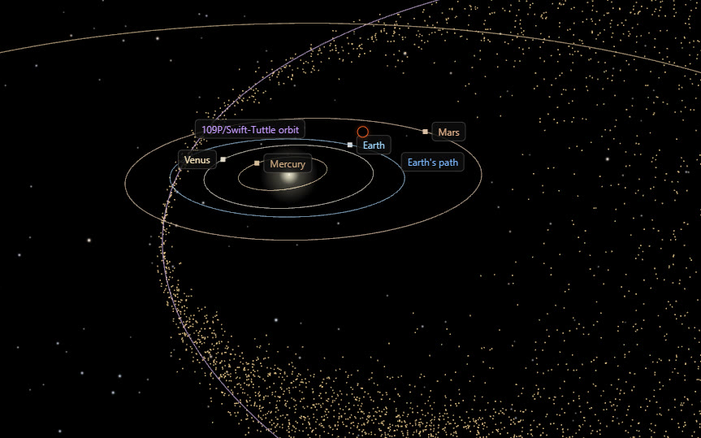

An astronomy engine for the web
Astraeus is a TypeScript library for drawing the solar system in a browser, in the right place at the right time. Ask it where the Moon was when Eagle landed and it answers in kilometres, in a named reference frame, with a note of how far that answer has been checked against JPL.
import { Scene, earth, moon } from "astraeus"; const when = "1969-07-20T20:17:40Z"; // Eagle lands const scene = new Scene() .addBody(earth).addBody(moon).setTime(when); await scene.load(); scene.stateOf("moon", when).positionKm; // → [-385274.5, -47903.7, -30878.0] scene.provenanceOf("moon").sources; // → ["@lizard-isana/orb 3.1.1 Luna: truncated // Meeus-style lunar series, …"]
- frameJ2000 equatorial (EQJ), centred on Earth
- checkedagainst 8 JPL Horizons (DE441) vectors, 2022-06 to 2025-06: at most 6.4 km in distance
- runs inNode or a browser; the site's tests run this call and compare its answer
Three demos, built on the public API · each opens in the full viewer
 16–24 July 1969
16–24 July 1969
Apollo 11
Rebuilt from NASA's mission report. Story panels open as the clock reaches each step, and each one lists its sources.

Perseids 2025 · Geminids 2024–25Meteor showers
Every orbit the Global Meteor Network measured, 25,588 Perseids and 51,115 Geminids, each on its own ellipse.
 November 2016
November 2016
Jupiter and Io
All 115 known moons of Jupiter where Horizons puts them, with Io, Europa, Ganymede and Callisto as mapped globes.
- 1kmThe planets, Mercury to Neptune, against JPL HorizonsDE441 · 2 January each year from 1972 · Voyager flybys
- 6.4kmThe Moon's distance, against Horizons8 vectors · 2022 to 2025
- 4cmIo, against Horizons, at its worst moment39,367 moments compared
- 458Moons the six optional data packages placeMars to Pluto · fetched a year at a time
How to read thisLargest difference found in each recorded comparison. Values the engine models or fills in are labelled in the viewer, not listed here.
| What | Largest difference | Compared over | Reference |
|---|---|---|---|
| Planets, Mercury to Neptune | within 1 km | with each planet's moon package, 2 January of each year from 1972 and at the Voyager flybys | JPL Horizons (DE441) |
| The Moon | within 6.4 km | distance, at eight dates 2022 to 2025 | JPL Horizons (DE441) |
| Io | within 4 cm | 39,367 compared moments | JPL Horizons |
| All 115 moons of Jupiter | within 1 m | the same comparison, every moon | JPL Horizons |
| 292 moons of Saturn | within 20 m | the same comparison, every moon | JPL Horizons |
| Moons of Mars, Uranus, Neptune and Pluto | within 1 m | the same comparison, every moon | JPL Horizons |
How positions are stored
A table of Io's position every 10 minutes from 2010 to 2030 would take 50.5 MB. Astraeus keeps short polynomial fits to JPL Horizons instead, 1.1 MB for the same years, and evaluates them at whatever moment the clock shows.
That is 47× smaller, and Io never drifts more than 4 cm from Horizons. Slide through two days of its orbit below; the left panel is the table, the right one the fit.
Hour 0.0 · Io is 423,087 km from Jupiter's centre
Every map, star and data set, with its source and licence →
Everything above goes through the same four layers.
- 01 · STATE
Time and frames
Every moment is converted between UTC, TT and TDB once, in one place. Positions are held in J2000 equatorial and converted only for drawing.
- 02 · SOURCES
Data sources
Planets and moons come from Horizons fits. Comets, asteroids and meteoroids come from orbital elements, spacecraft from sampled paths. Any one can be swapped.
- 03 · DRAWING
Drawing at any scale
The scene re-centres on whatever you look at, so positions stay precise at true scale. Behind it sit 8,920 naked-eye stars from the HYG catalogue.
- 04 · STORY
Timelines and panels
Playback has events and story panels that open at their moment. Each body's card says whether a value was observed, modelled or illustrative.
Getting started
PeersReact, React DOM, react-three-fiber and three are peer dependencies. A plain-JavaScript page still needs them installed.
BundlersBuilt and run with the packed package in Vite, webpack and Parcel. A bare <script type="module"> will not work.
ExamplesStart from hello-scene, hello-react, hello-planets or hello-sky in the repository. There are also ready-made parts.
Also built with it · separate sites by the same author, installing the package from npm
The asteroid belt
About 110,000 main-belt asteroids and the 16,475 known Jupiter Trojans, placed from NASA/JPL orbital elements.
Visit →Meteor showers
A standalone meteor-shower site, pinned to the 0.2.0 package.
Visit →Earth's Closest Calls
The ten closest asteroid flybys of Earth since 2020, with the clearance of each.
Visit →